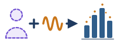
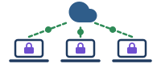

Presìdi di protezione dei dati · 3 di 3«Soluzioni digitali che consentono di raccogliere, elaborare, analizzare e condividere informazioni proteggendo la riservatezza e la privacy dei dati» (D.M. 166/2025, par. 3.3). Attuano privacy by design e by default: GDPR, artt. 25 e 32 · AI Act, Considerando 69 e art. 10, par. 5
1
Privacy differenziale
Differential Privacy

Aggiunge ai dati un «rumore matematico» calibrato: si ricavano statistiche e tendenze di scuola (es. il livello medio nelle STEM) senza poter risalire ai voti del singolo studente.
Strumento: OpenDP (Università di Harvard)
2
Cifratura omomorfica
Homomorphic Encryption
L’IA esegue calcoli e analisi su dati cifrati, senza mai decifrarli durante l’elaborazione: nemmeno l’infrastruttura server può leggerli.
Strumento: Microsoft SEAL
3
Apprendimento federato
Federated Learning

I dati restano sui dispositivi della scuola: l’addestramento avviene in locale e al server centrale arrivano solo gli aggiornamenti aggregati del modello, mai i dati grezzi degli alunni.
Strumento: TensorFlow Federated